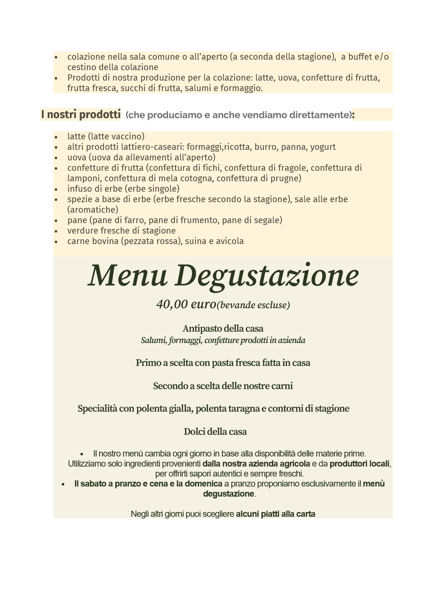

Menu
Il nostro menu consiste di prodotti nostrani e in particolare di nostra diretta produzione. Prediligiamo quantità e qualità, in quanto crediamo che i nostri clienti meritino di mangiare bene e a sazietà.


Il nostro menu consiste di prodotti nostrani e in particolare di nostra diretta produzione. Prediligiamo quantità e qualità, in quanto crediamo che i nostri clienti meritino di mangiare bene e a sazietà.
